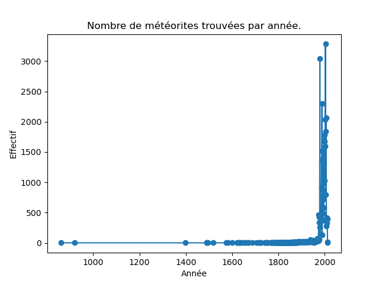

Rattrapage
Science des données 2
L3 MIASHS, 6 février 2024
Tout document autorisé
Durée : 1h15
Modus operandi : l'énoncé est ci-dessous. Vous répondez dans ce document que vous m'envoyez au format pdf au plus tard à 17h25 (horaire strict). Vous m'envoyez également un fichier contenant le code python à exécuter pour résoudre les questions. Je dois pouvoir exécuter ce script sans erreur et les réponses aux questions doivent s'afficher de manière claire (affichage d'un message tel que : La réponse à la question 3 est : ...). Vous pouvez m'envoyer plusieurs emails successifs. Dans ce cas, seul le dernier (envoyé avant 17h25) sera pris en compte.
Ne pas oublier d'indiquer votre nom dans le compte-rendu et dans un commentaire au début du script python.
Énoncé
Nous allons étudier un jeu de données qui contient des informations concernant des météorites trouvées à la surface de la terre.
Ce fichier est disponible à l'url https://philippe-preux.github.io/ensg/miashs/datasets/meteorite-landings.csv.
Pour chaque météorite, le jeu de données indique :
- name : le nom du lieu de la découverte de la météorite ;
- id : un numéro identifiant la découverte de manière unique ;
- nametype : cet attribut vaut valid si c'est une météorite normale, relict si elle a été dégradée par la météo terrestre ;
- recclass : la classe de la météorite qui caractérise ses propriétés physiques, chmiques, etc. ;
- mass : la masse de la météorite en grammes ;
- fall : indique si la météorité a été vue tomber (Fell) ou juste trouvée (Found) ;
- year : l'année de la découverte de la météorite ;
- reclat : la latitude à laquelle la découverte a eu lieu ;
- reclong : la longitude à laquelle la découverte a eu lieu ;
- GeoLocation : une chaine de caractères contenant latitude et longitude séparées par une virgule.
Les questions :
- quelle(s) commande(s) effectuez-vous pour charger le jeu de données ? Indiquez-la/les dans le compte-rendu. Indiquez également le nombre de météorites sont recensés dans ce jeu de données.
- Les attributs nametype, recclass et fall sont catégoriques. Faites-le nécessaire. Indiquez ce que vous faites pour répondre à cette question dans votre compte-rendu.
- Combien y a-t-il de données dans ce jeu de données ? Indiquez la commande que vous tapez pour le savoir et la valeur obtenue.
- Il y a des données erronnées dans ce jeu de données. Ainsi, si la date de découverte est antérieure à 860 ou ostérieure à 2016, il s'agit d'une donnée erronnée. De même, si la latitude et la longitude de la découverte sont 0, il s'agit encore d'une donnée erronnée.
Combien y a-t-il de données erronnées de chaque catégorie ? Comment faites-vous pour retirer toutes ces données erronnées du jeu de données ?
Dans votre compte-rendu, vous indiquez :
- combien il y a de données dont la date de découverte est inférieure à 860 ou supérieure à 2016,
- combien il y a de données pour lesquelles latitude et longitude sont nulles,
- quelles commandes tapez-vous pour les retirer ?
Si vous ne savez pas répondre à ces questions, je mets à votre disposition ce fichier qui contient le jeu de données sans les erreurs : https://philippe-preux.github.io/ensg/miashs/datasets/meteorite-landings-cleaned.csv. Pour toutes les questions qui suivent utilisez soit le résultat de vos commandes indiquées ci-dessus, soit ce fichier de données.
- Quelle(s) commande(s) effectuez-vous pour connaître le nombre de découvertes réalisées chaque année ? Indiquez cette/ces commande(s) dans le compte-rendu.
- Quelle(s) commande(s) effectuez-vous pour obtenir l'année où on a découvert le plus de météorites ? Indiquez cette année dans le compte-rendu.
- Quel(les) commande(s) tapez-vous pour obtenir un graphique représentant le nombre de découvertes de météorites par année ? Indiquez cela dans votre compte-rendu, insérez le graphique que vous obtenu et commentez-le. Voyez-vous quelque chose de bizarre sur ce graphique ?
Ce graphique doit ressembler à celui-ci :

- Faire un zoom sur la zone où il y a eu le plus grand nombre de découvertes, soit entre 1950 et maintenant. Indiquez la/les commande(s) dans votre compte-rendu.
- Réalisez une représentation graphique de la position des découvertes de météorites (longitude, latitude). Quel(les) commandes tapez-vous ? Insérez le graphique dans le compte-rendu.
- Voyez-vous quelque chose de bizarre sur ce graphique ? Si non, passez à la question suivante. Si oui, indiquez ce qui ne va pas dans le compte-rendu et que faites-vous pour remédier au problème ? Insérez le nouveau graphique dans le compte-rendu.
- Faites ce même genre de représentation des lieux de découvertes pour d'une part les découvertes avant 1900 et celles postérieures à 1900. Indiquez la/les commande(s) que vous tapez pour obtenir ces deux graphiques. Insérez-les dans le compte-rendu.
- Commentez ces deux graphiques.